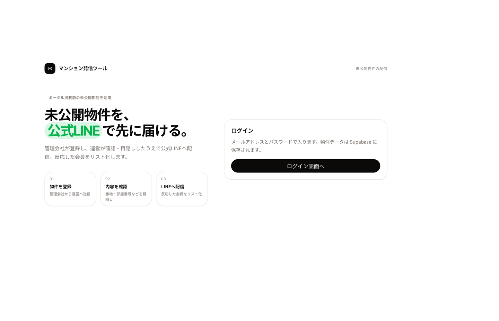
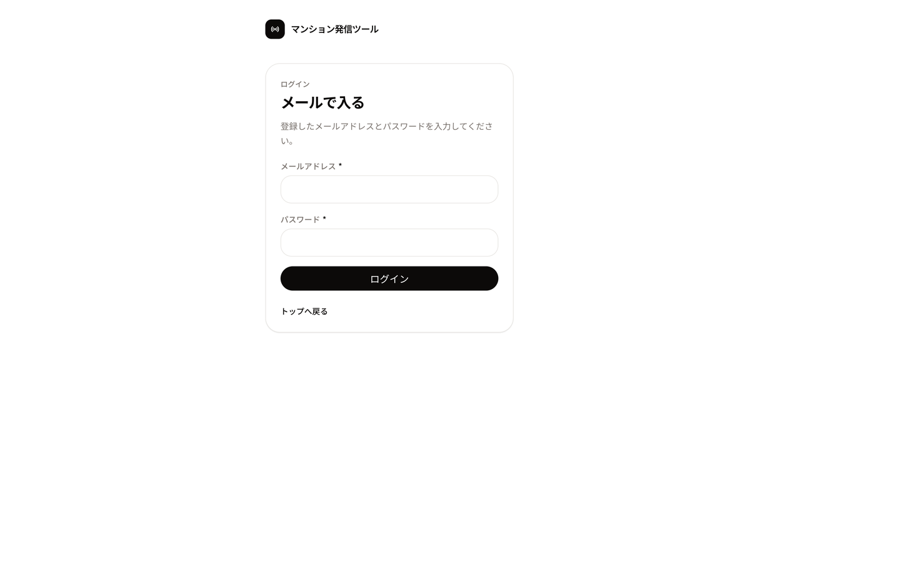
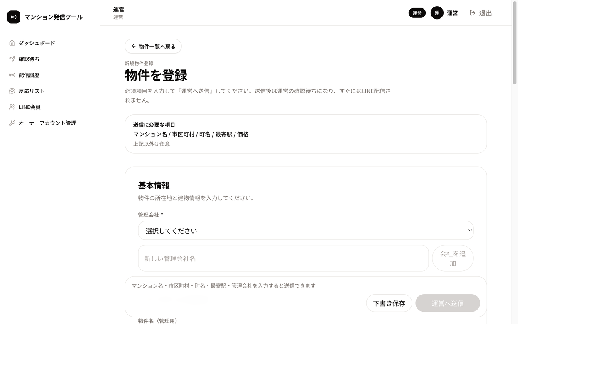
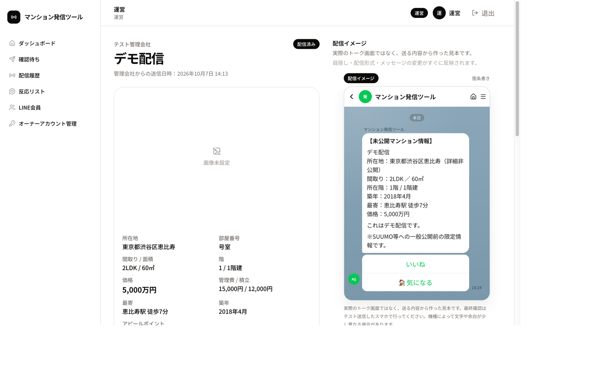
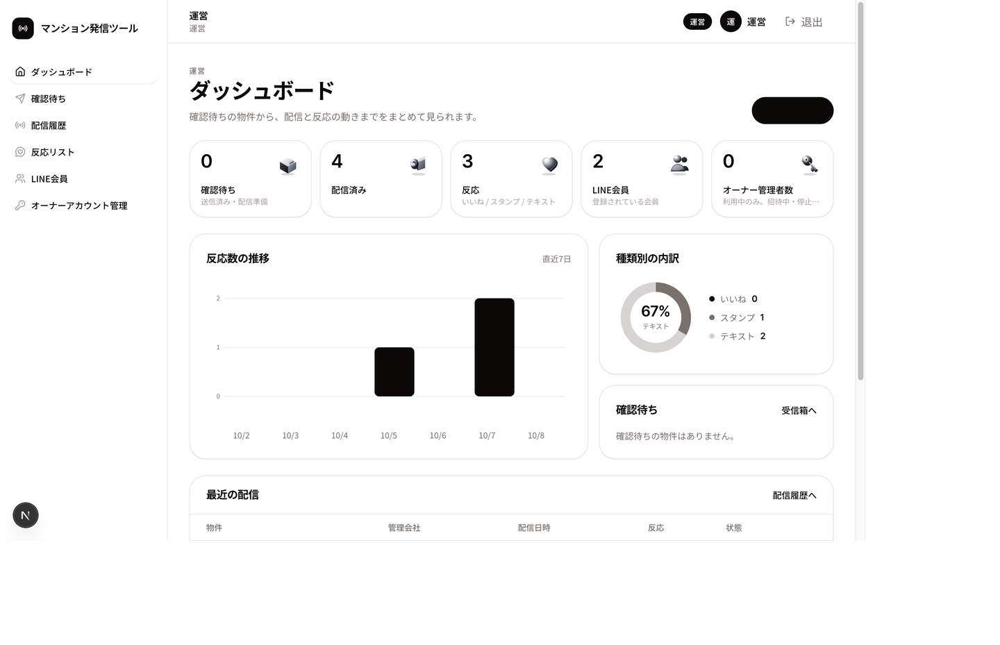
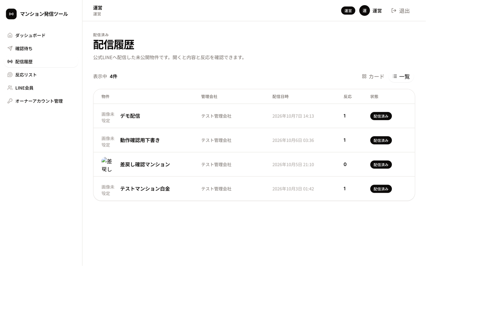
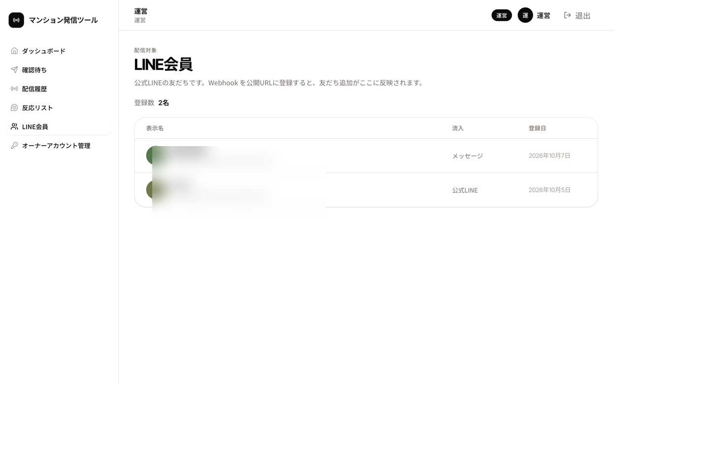

01
物件を登録
管理会社が内容を入れて、運営へ送ります。
ポータルに出す前の未公開マンションを、管理会社が登録し、運営が確認して、公式LINEの友だちに先に届けるツールです。押す順番は 使用ガイド に分けています。

01
管理会社が内容を入れて、運営へ送ります。
02
運営が番地や部屋番号を隠し、文面を見ます。
03
友だち全員にテキストが届き、反応が残ります。
| 役割 | できること |
|---|---|
| 管理会社 | 自社の物件を登録し、運営へ送る。送信後は編集できない。差戻しが来たら直して再送できる。 |
| 運営 | 届いた物件を確認し、隠す項目を選んで公式LINEへ送る。反応と会員を見る。 |
| オーナー | 利用中で、ログイン用のユーザーがある人だけ入れる。発行しただけではメールもパスワードも作られない。 |
運営の「表示を確認」は、そのオーナーに見える画面のプレビューです。再読み込みすると運営に戻ります。

運営は確認待ちの画面へ、管理会社とオーナーは自社の物件画面へ進みます。物件・会員・反応は Supabase に残るので、別の端末でも同じログインなら同じデータです。






| 状態 | 意味 |
|---|---|
| 下書き | まだ運営へ送っていない。編集できる。 |
| 確認待ち | 運営の確認を待っている。管理会社は編集できない。 |
| 差戻し | 理由つきで戻ってきた。直して再送できる。 |
| 配信準備 | 運営が確認内容を保存した状態。配信できる。 |
| 配信済み | 公式LINEへ送ったあと。再送できない。 |
| もの | 場所 |
|---|---|
| アプリ | https://mansion-hasshin.netlify.app |
| LINEの受け口 | https://mansion-hasshin.netlify.app/api/line/webhook |
| この仕様書 | GitHub Pages の docs/ |
| 操作手順 | 使用ガイド |
同じ画面は、このPCでは http://127.0.0.1:3000 でも開けます。LINE公式アカウントの月額と追加メッセージ料金は別費用で、売上から差し引いた残りを泉さんと折半します。